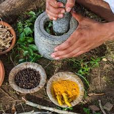

Métodos de Preparación
Las plantas medicinales pueden prepararse de diversas maneras, cada una con sus propias técnicas y beneficios. La elección del método depende de la planta específica y del uso que se le quiera dar. A continuación se describen algunos métodos comunes:
- Infusiones: Método donde se vierten hojas o flores en agua caliente para extraer sus propiedades.
- Tisanas: Similar a las infusiones, pero se utilizan otras partes de la planta como raíces o cortezas.
- Decocciones: Se hierve la planta en agua durante un tiempo prolongado para extraer compuestos más resistentes.
- Cataplasmas: Aplicación externa de plantas machacadas o en pasta para tratar heridas o inflamaciones.
- Tinturas: Extractos de plantas disueltos en alcohol, utilizados para conservar y concentrar las propiedades medicinales.
Consejos de Uso
Al utilizar plantas medicinales, es importante seguir algunos consejos para asegurar su efectividad y seguridad. Aquí tienes algunos puntos a tener en cuenta:
| Consejo | Descripción |
|---|---|
| Dosificación: | Es crucial seguir las dosis recomendadas, ya que un exceso puede causar efectos secundarios. |
| Calidad: | Utiliza plantas de calidad, preferiblemente orgánicas y frescas, para obtener mejores resultados. |
| Almacenamiento: | Guarda las plantas en un lugar fresco y seco, lejos de la luz directa, para preservar sus propiedades. |
| Consulta Médica: | Antes de iniciar cualquier tratamiento con plantas medicinales, es recomendable consultar a un profesional de la salud, especialmente si se toman medicamentos. |
| Preparación Adecuada: | Sigue las instrucciones específicas para cada planta, ya que algunas requieren preparación especial para ser efectivas. |